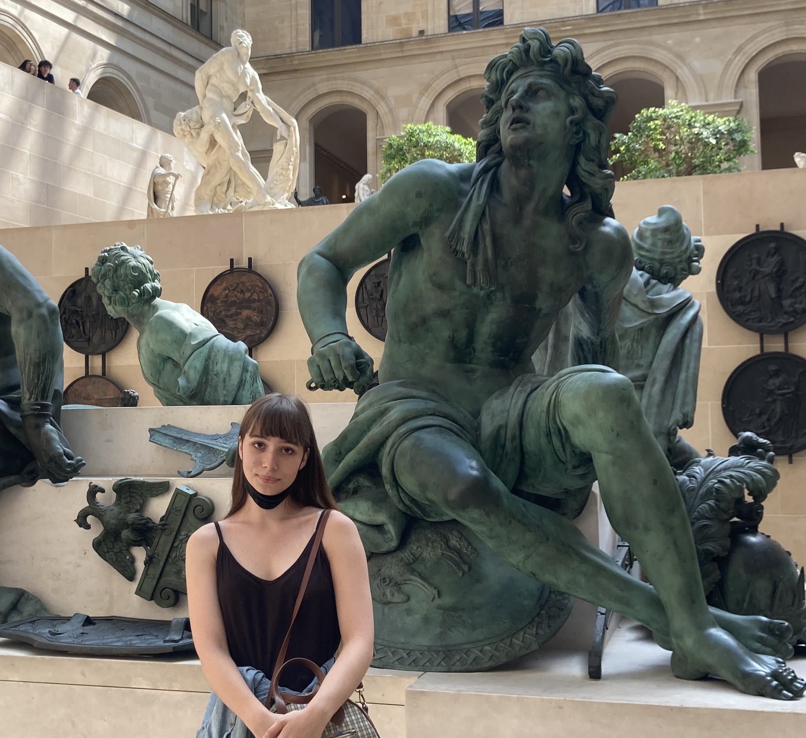

Hello!
I'm Marina and I like building things on the web.
(This is your cue to start scrolling, if you'd like)

Hi! I'm Marina Wooden - an Informatics student at the University of Washington. I focus mostly on software development, especially anything related to the web. I also have a personal interest in data analysis, and figuring out things that are going on in the world by analyzing them on my own. I got into coding by creating templates for blogs in high school, and then I eventually found out that I could also use technology to explore current events in the world that I'm passionate about.
In addition to being a student, I am also a TA for Web Programming (CSE 154) at the UW. It's my favorite job that I've had so far, and I love being able to teach other people about one of my greatest interests. If you're reading this and you were/are in my section- HI!